Somna-Guide – Fähigkeiten, beste Haustiere und Teams in Hero Wars
- Von: Alexandre Domingos. .
Somna betritt einen Kampf nicht, um die Schadensrangliste anzuführen. Sie betritt ihn, um Zeit zu stehlen. Eine einzige ultimative Fähigkeit kann das gesamte gegnerische Team einschläfern, und jeder Stapel Schläfrigkeit macht den nächsten Schlagabtausch für deine Seite sicherer.
In meinen Tests funktionierte diese Kontrolle überraschend gut sowohl in physischen als auch in magischen Teams. Somna verschaffte Adam den langen Kampf, den er braucht, während Fluffy, Cascade und Krista eine Unterstützerin erhielten, die den Gegner unterbrechen konnte, bevor ihr Druck nachließ.

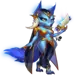
📋 Inhaltsverzeichnis des Somna-Guides
Wer ist Somna in Hero Wars: Dominion Era?
Somna ist eine Kontrollheldin mit Beweglichkeit in der mittleren Reihe, deren Spielweise auf Schlaf und Schläfrigkeit beruht. Ihre ultimative Fähigkeit kann alle fünf Gegner außer Gefecht setzen, während ihre übrigen Fähigkeiten den physischen und magischen Angriff der Feinde verringern, den Verbündeten vor ihr stärken und stark betroffene Gegner in fliehende Schafe verwandeln.
Meine Einschätzung ist einfach: Somna ist am stärksten, wenn ihr Team einen Grund hat, Zeit zu gewinnen. Sie erledigt Gegner nicht selbst; sie schafft die Ruhe zwischen ihren Angriffen, damit Adam, Fluffy, Cascade, Krista oder eine andere Siegbedingung übernehmen kann.
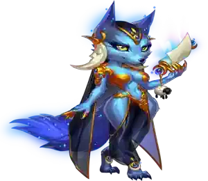
- Hauptrolle: Kontrolle
- Hauptattribut: Beweglichkeit
- Position: Kämpft in der mittleren Reihe
- Patronat: Fenris, Oliver, Axel
- Seelensteine: Vorübergehend nicht erhältlich
Somna - Maximale Werte Hero Wars Dominion Era
| Attribut | Wert | Attribut | Wert |
|---|---|---|---|
| Intelligenz |  2.965 2.965 |
Gesundheit |  446.752 446.752 |
| Physischer Angriff |  92.033 92.033 |
Magischer Angriff |  17.463 17.463 |
| Rüstung |  37.149 37.149 |
Magieverteidigung |  37.594 37.594 |
| Rüstungsdurchdringung |  17.900 17.900 |
Stärke |  2.700 2.700 |
| Widerstand gegen kritische Treffer |  16.881 16.881 |
Präzision |  16.881 16.881 |
| Beweglichkeit |  16.881 16.881 |
Kraft |  173.612 173.612 |
Somna Vor- und Nachteile - Hero Wars: Web & Facebook
✅ Vorteile
- Kontrolle über das gesamte Team: Wiegenliedschleier kann die gesamte gegnerische Formation 7 Sekunden lang einschläfern.
- Hervorragende Tempounterstützung: Schlaf und Verwandlungen in Schafe verschaffen skalierenden Verbündeten die Zeit, gefährlich zu werden.
- Verringert beide Schadensarten: Schläfrigkeit senkt den physischen und magischen Angriff und ist deshalb nicht nur gegen physische Teams nützlich.
- Schützt die Frontlinie: Traumrüstung gewährt dem Verbündeten vor Somna einen großen Rüstungsbonus.
- Flexibel einsetzbar: Meine Tests lieferten gute Ergebnisse in physischen und magischen Zusammenstellungen.
❌ Nachteile
- Geringer eigener Schaden: Somna kontrolliert den Kampf, benötigt aber normalerweise Verbündete, um Gegner zu besiegen.
- Schlaf kann vorzeitig enden: Gegner wachen auf, nachdem sie 107.633 Schaden erlitten haben. Unkontrollierter Flächenschaden kann die Pause daher verkürzen.
- Sebastian ist ein direkter Konter: Sein Schutz kann den Kontrolleffekt blockieren, der Somnas ultimative Fähigkeit ausmacht.
- Stufenprüfungen sind wichtig: Ihre Chance auf Kontrolle sinkt gegen Gegner, deren Stufe über der angegebenen Fähigkeitsstufe liegt.
- Begrenzte Verfügbarkeit: Ihre Seelensteine sind vorübergehend nicht erhältlich.
Priorität beim Verbessern von Somnas Fähigkeiten - Hero Wars: Dominion Era
Somnas Fähigkeiten sollten zuerst für zuverlässige Kontrolle und danach für den Schutz der Frontlinie verbessert werden. Die Skalierung mit physischem Angriff verstärkt ihre Effekte, doch die Kontrolle bleibt der eigentliche Gewinn.
1. Fähigkeit - Wiegenliedschleier
Beschreibung im Spiel: Versetzt gegnerische Helden 7 Sekunden lang in Schlaf. Schlafende Gegner können nicht handeln, können jedoch vorzeitig aufwachen, wenn sie 107.633 Schaden erleiden. Die Chance auf Schlaf sinkt, wenn die Stufe des Ziels über 130 liegt.
Erklärung der Fähigkeit: Somna setzt das gesamte gegnerische Team außer Gefecht. Jeder schlafende Held bleibt inaktiv, bis die 7 Sekunden enden oder der erlittene Schaden den Schwellenwert erreicht. Dieser Wert ist nicht der von Somna verursachte Schaden, sondern die Schadensmenge, die das schlafende Ziel vor dem Aufwachen ertragen kann.
Formel - Schadensschwelle: 107.633 (100 % Physischer Angriff + 120 × Stufe)
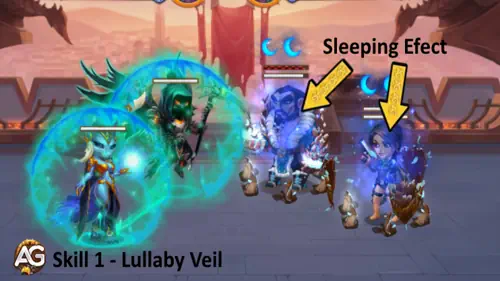
Entwicklungspriorität: Sehr hoch – Diese Fähigkeit definiert Somna und ist die stärkste Eröffnung für ihr Team. Halte sie auf einer hohen Stufe, damit ihre Kontrollprüfung so zuverlässig wie möglich bleibt.
- Dauer: 7 Sekunden
- Schlüsselwörter: Ultimativ, Schlaf, Kontrolle
2. Fähigkeit - Traumrüstung
Beschreibung im Spiel: Segnet den Verbündeten an der Front für 10 Sekunden. Der Segen erhöht dessen Rüstung um 34.110 und fügt seinen Basisangriffen den Effekt Schläfrigkeit hinzu. Jeder Schläfrigkeitseffekt auf einem Gegner verringert dessen physischen und magischen Angriff um 26.908. Der Effekt hält 10 Sekunden an und kann bis zu 3-mal angewendet werden. Die Chance auf Schläfrigkeit sinkt, wenn die Stufe des Ziels über 130 liegt.
Erklärung der Fähigkeit: Somna schützt den Verbündeten direkt vor ihr und verwandelt dessen Basisangriffe in Schwächungen. Bei drei Stapeln kann der Gegner bis zu 80.724 physischen und magischen Angriff verlieren. Deshalb kann diese Fähigkeit einen langen Kampf unauffällig entscheiden.
Formel - Rüstungserhöhung: 34.110 (30 % Physischer Angriff + 50 × Stufe)
Formel - Angriffsverringerung pro Stapel: 26.908 (25 % Physischer Angriff + 30 × Stufe)
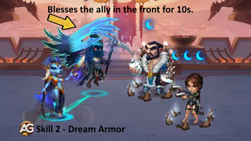
Entwicklungspriorität: Hoch – Sie verbindet Verteidigung und offensive Unterdrückung in einer Anwendung, unterstützt Somnas Kontrollplan jedoch, anstatt ihn einzuleiten.
- Anfängliche Abklingzeit: 10 Sekunden
- Abklingzeit: 16 Sekunden
- Dauer: 10 Sekunden
- Maximale Schläfrigkeitsstapel: 3
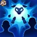
3. Fähigkeit - Schäfchenzählen
Beschreibung im Spiel: Verflucht einen Bereich im Zentrum des gegnerischen Teams. Gegner in diesem Bereich erleiden 31.510 Schaden und erhalten 1 Schläfrigkeitseffekt. Hat ein betroffener Gegner bereits 3 Schläfrigkeitseffekte, verwandelt er sich 5 Sekunden lang in ein Schaf. Er kann nicht angreifen und versucht, um sein Leben zu fliehen. Die Chance auf Schläfrigkeit sinkt, wenn die Stufe des Ziels über 130 liegt.
Erklärung der Fähigkeit: Dies ist Somnas wiederkehrende Kontrollschleife. Die 31.510 physischen Schadenspunkte sind bescheiden, doch der wahre Gewinn besteht darin, einen Gegner mit maximalen Stapeln 5 Sekunden lang in ein harmloses Schaf zu verwandeln.
Formel - Physischer Schaden: 31.510 (30 % Physischer Angriff + 30 × Stufe)
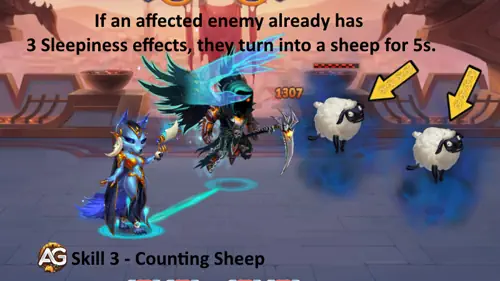
Entwicklungspriorität: Sehr hoch – Wiederholte Verwandlungen in Schafe sind nach ihrer ultimativen Fähigkeit Somnas beste Kontrolle, und die Fähigkeitsstufe beeinflusst, ob Schläfrigkeit angewendet wird.
- Anfängliche Abklingzeit: 5 Sekunden
- Abklingzeit: 13 Sekunden
- Dauer als Schaf: 5 Sekunden
- Schlüsselwörter: Physischer Schaden, Schläfrigkeit, Kontrolle
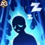
4. Fähigkeit - Reich der Ruhe
Beschreibung im Spiel: Passiv Fähigkeit. Wenn ein Gegner Somna oder angrenzenden Verbündeten Schaden zufügt, wird 1 Schläfrigkeitseffekt auf den verursachenden Gegner angewendet. Stammt der Schaden von einer ultimativen Fähigkeit, werden 2 Schläfrigkeitseffekte angewendet. Dieser Effekt kann höchstens einmal pro Sekunde ausgelöst werden. Die Chance auf Schläfrigkeit sinkt, wenn die Stufe des Ziels über 130 liegt.
Erklärung der Fähigkeit: Gegner helfen Somna allein dadurch beim Aufbau ihrer Kontrolle, dass sie ihren Bereich angreifen. Schaden durch ultimative Fähigkeiten wird mit zwei Stapeln stärker bestraft und eröffnet einen schnellen Weg zur Verwandlung durch Schäfchenzählen.
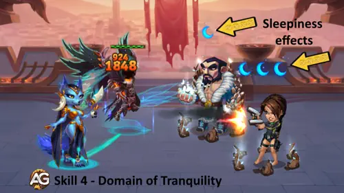
Entwicklungspriorität: Hoch – Sie beschleunigt Somnas gesamten Schläfrigkeitsmechanismus, besonders gegen Flächen- und Ultimativschaden. Um diese Stapel auszunutzen, benötigt Somna jedoch weiterhin ihre aktiven Kontrollfähigkeiten.
- Abklingzeit: 1 Sekunde pro Auslösung
- Schlüsselwörter: Passiv, Schläfrigkeit, Kontrolle
Bester Skin für Somna in Hero Wars: Dominion Era
Somnas Sonnen-Skin ist eindeutig die erste Investition, weil jeder numerische Effekt ihrer aktiven Fähigkeiten mit physischem Angriff skaliert, während Beweglichkeit ihre ausgewogene Grundlage bleibt.
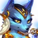
Standard-Skin
Wertegewinn: Beweglichkeit +1.365
- Physischer Angriff durch Beweglichkeit: +4.095
- Rüstung durch Beweglichkeit: +1.365
Entwicklungspriorität: Hoch – Beweglichkeit gibt Somna physischen Angriff für ihre Formeln und Rüstung zum Überleben. Damit ist sie eine starke, vielseitige zweite Priorität.
Benötigte Beweglichkeits-Skinsteine für die Maximalstufe:  30.825
30.825
Sonnen-Skin
Wertegewinn: Physischer Angriff +7.095
Entwicklungspriorität: Sehr hoch – Physischer Angriff erhöht die Aufwachschwelle von Wiegenliedschleier, den Rüstungsbonus und die Angriffsverringerung von Traumrüstung sowie den Schaden von Schäfchenzählen. Kein anderer Somna-Skin beeinflusst so viele Formeln.
Benötigte Beweglichkeits-Skinsteine für die Maximalstufe:  55.410
55.410
Hinweis: Der Sonnen-Skin ist am 24. Juli exklusiv verfügbar und soll ab dem 1. Dezember allgemein freischaltbar sein.
Priorität bei Somnas Glyphenentwicklung
Ich priorisiere zuerst Somnas nützliche Skalierung: Physischer Angriff, danach Beweglichkeit, Gesundheit und Magieverteidigung. Rüstungsdurchdringung kommt zuletzt, weil Schaden nicht ihre Hauptaufgabe ist.
1. Glyphe - Physischer Angriff
Wertegewinn: Physischer Angriff +4.340
Entwicklungspriorität: Sehr hoch – Dies verbessert direkt jede numerische Formel in Somnas aktiven Fähigkeiten, darunter auch zwei defensive Effekte.
2. Glyphe - Rüstungsdurchdringung
Wertegewinn: Rüstungsdurchdringung +6.500
Entwicklungspriorität: Niedrig – Sie hilft nur Somnas bescheidenem physischen Schaden und bringt weder Schlaf noch Schläfrigkeit, Rüstungsschutz oder Angriffsverringerung einen Vorteil.
3. Glyphe - Gesundheit
Wertegewinn: Gesundheit +62.200
Entwicklungspriorität: Mittelhoch – Eine lebende Somna sammelt weiter Schläfrigkeit. Gesundheit ist besonders wertvoll gegen gemischten und reinen Schaden, der sich nicht mit einem einzigen Verteidigungswert abfangen lässt.
4. Glyphe - Magieverteidigung
Wertegewinn: Magieverteidigung +6.500
Entwicklungspriorität: Mittel – Nützlich gegen magischen Explosivschaden, aber weniger vielseitig als Gesundheit und ohne Verbesserung für Somnas Kontrollformeln.
5. Glyphe - Beweglichkeit
Wertegewinn: Beweglichkeit +1.135
- Physischer Angriff durch Beweglichkeit: +3.405
- Rüstung durch Beweglichkeit: +1.135
Entwicklungspriorität: Hoch – In der Praxis ist Beweglichkeit die beste zweite Verbesserung, weil sie sowohl Somnas Skalierung als auch ihre physische Widerstandsfähigkeit steigert.
Priorität bei Somnas Artefaktentwicklung - Hero Wars: Dominion Era
Somnas Artefakte verfolgen zwei Richtungen: dauerhafte Überlebensfähigkeit und Skalierung des eigenen physischen Angriffs oder ein vorübergehender Magieverteidigungsbonus für das gesamte Team.
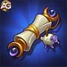
Artefakt Tausendundein Wiegenlied
Team-Bonus: Magieverteidigung +50.190
Entwicklungspriorität: Mittelhoch – Es wird durch Wiegenliedschleier aktiviert und kann das gesamte Team vor magischen Gegenangriffen schützen. Sein Nutzen ist jedoch vorübergehend und vom jeweiligen Duell abhängig.

Artefakt Bund des Verteidigers
Wertegewinn: Rüstung +12.546
Magieverteidigung +12.546
Entwicklungspriorität: Hoch – Ausgewogene Verteidigungswerte halten Somna sowohl gegen physische als auch gegen magische Teams aktiv. Das ist wertvoller, als ihren persönlichen Schaden zu maximieren.

Artefakt Ring der Beweglichkeit
Wertegewinn: Beweglichkeit +6.249
- Physischer Angriff durch Beweglichkeit: +18.747
- Rüstung durch Beweglichkeit: +6.249
Entwicklungspriorität: Sehr hoch – Dies ist Somnas vollständigstes Artefakt: Es stärkt alle Formeln für physischen Angriff und fügt gleichzeitig Rüstung hinzu.
Bestes Patronat für Somna
Nur Fenris, Oliver und Axel können Somna als Patronat dienen. Fenris maximiert ihre Skalierung mit physischem Angriff, während Oliver und Axel einen Teil der Offensive gegen Überlebensfähigkeit eintauschen.
1. Platz:

Fenris ist meine erste Wahl, wenn Somna sicher genug ist, um aggressiv gespielt zu werden. Sein physischer Angriff erhöht alle ihre Formeln, Rüstungsdurchdringung verbessert den Schaden von Schäfchenzählen und Blindheite Wut kann ihren Basisangriffen 2 Sekunden Blindheitheit hinzufügen.
2. Platz:

Oliver ist die beste Option für Durchhaltevermögen und funktionierte gut in der getesteten magischen Zusammenstellung. Gesundheit, Rüstung und wiederholte Heilung helfen Somna, lange genug zu überleben, um erneut Schläfrigkeit und Verwandlungen in Schafe auszulösen.
3. Platz:

Axel ist die Wahl zum Schutz vor Explosivschaden. Defensive Blase verhindert, dass ein einzelner Treffer zu viel von Somnas maximaler Gesundheit entfernt, obwohl sein Patronatswert für magischen Angriff ihren Formeln für physischen Angriff kaum hilft.
So konterst du Somna in Hero Wars Dominion Era
Somnas Bedrohung konzentriert sich auf Kontrolle. Die sauberste Antwort ist ein Held, der diese Kontrolle verhindert, bevor ihre Verbündeten die gewonnene Zeit ausnutzen können.
Sebastian ist Somnas direkter Konter, weil sein Kontrollschutz Schlaf blockieren und verhindern kann, dass ihre ultimative Fähigkeit das gesamte Team außer Gefecht setzt. Ohne diese lange Pause hat Somna deutlich weniger Zeit, Schläfrigkeit bis zur Verwandlung in Schafe aufzubauen. Khorus ist hier keine gleichwertige Antwort: Somnas Schlaf wird ausdrücklich nicht von Khorus blockiert.
Alexandres Tipp: Warum blockiert Khorus Somnas Schlaf nicht?
Weil Khorus’ Fähigkeit schlicht nicht darauf programmiert wurde, den Effekt Schlaf zu blockieren.
Der Unbezwingbare, Khorus’ passive Fähigkeit, blockiert nur die folgenden Kontrolleffekte:
- Stille
- Bezauberung
- Blindheit
- Betäubung
- Gedankenkontrolle
Schlaf steht nicht auf dieser offiziellen Liste. In der Praxis bedeutet das:
- ✅ Keiras Stille → Khorus kann sie blockieren.
- ✅ Arachnes Betäubung → Khorus kann sie blockieren.
- ✅ Phobos’ Gedankenkontrolle → Khorus kann sie blockieren.
- ❌ Somnas Schlaf → Khorus blockiert ihn nicht.
Beste Kriegsflaggen für Somna in Hero Wars
Somna profitiert am meisten von Flaggen, die das aktive Haustier des Teams stärken oder den gegnerischen Fähigkeitszyklus unzuverlässiger machen, während sich ihr Kontrollmechanismus aufbaut.

Kriegsflagge der Haustierstärke
Vorteil für Somna und das Team: Beide getesteten Teams verwenden Axel als Haupthaustier. Eine Erhöhung der Fähigkeitskraft des Haustiers um 10 % verbessert den Schutz, der diesen Zusammenstellungen für lange Kämpfe hilft, zu überleben, bis Somna und ihre Schadensverursacher die Kontrolle übernehmen.

Kriegsflagge des Frosts
Vorteil für Somna und das Team: Frost senkt alle 18 Sekunden für 8 Sekunden die Stufen gegnerischer Fähigkeiten. Das passt zu Somnas störender Identität und schwächt die entscheidenden Fähigkeitsfenster des Gegners, während ihr Team auf einen längeren Kampf setzt.
Beste Teams für Somna - Hero Wars: Dominion Era
Diese beiden Zusammenstellungen stachen in meinen Tests hervor. Beide verwenden Axel als Haupthaustier, doch eine setzt auf Adams physischen Druck in langen Kämpfen, während die andere einen überwiegend magischen Kern unterstützt.
Analyse von Team 1: Somna und Adam als Kern für lange Kämpfe
Dieses Team stellt eine Frage: Kann der Gegner den Kampf beenden, bevor Adam übermächtig wird? Julius und Axel sorgen für Widerstandsfähigkeit, Byrna unterstützt den langen Kampf, Fluffy erhöht den Druck und Somna unterbricht den Gegner immer wieder. Adam profitiert direkt, denn jeder zusätzliche Kontrollzyklus gibt ihm mehr Zeit, stärker zu werden.
| Somna - Bestes Team Nr. 1 | |||||
|---|---|---|---|---|---|
| Somna | 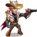 Adam |
||||
Analyse von Team 2: Somna als Unterstützung der Magie-Meta
Somna hat bewiesen, dass sie keinen physischen Carry benötigt, um relevant zu sein. Mit Fluffy, Cascade und Krista schafft sie sichere Zeitfenster für magischen Druck, während Byrna und Axel die Formation stabil halten. Olivers Patronat ist hier wichtig, denn das Ziel ist nicht Somnas Schaden, sondern sie für einen weiteren Kontrollzyklus am Leben zu halten.
| Somna - Bestes Team Nr. 2 | |||||
|---|---|---|---|---|---|
| Somna | 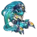 Cascade |
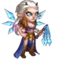 Krista |
|||
Abschließende Gedanken zu Somna - Hero Wars: Dominion Era
Somna ist die Art von Heldin, deren beste Arbeit zwischen den offensichtlichen Momenten geschieht. Sie unterbricht eine ultimative Fähigkeit, schwächt einen Angreifer, schützt den Verbündeten vor ihr und plötzlich hat dein Schadensverursacher lange genug überlebt, um zu gewinnen.
Nach meinen Tests würde ich sie nicht auf einen Archetyp festlegen. Sie überzeugte neben Adam in einem physischen Kern für lange Kämpfe und war ebenso interessant als Kontrollunterstützung für Fluffy, Cascade und Krista. Wenn du Teams magst, die durch Timing und Druck statt durch eine einzige explosive Eröffnung gewinnen, verdient Somna deine Aufmerksamkeit.
Videoempfehlung

▶ Dieses Video auf YouTube ansehen
Entdecke neue Strategien mit unseren ausgewählten Guides!

Hinterlasse deine Meinung!
Hat dir unser Somna-Guide für Hero Wars: Dominion Era gefallen? Gibt es etwas, das du nicht verstanden hast, oder möchtest du Änderungen vorschlagen? Wir laden dich ein, unseren Kommentarbereich auf der Alexandre-Games-Blogseite zu besuchen. Teile gerne deine Meinung, kläre deine Fragen und bringe deine Vorschläge ein.
Klicke auf die Schaltfläche unten, um zu beginnen: